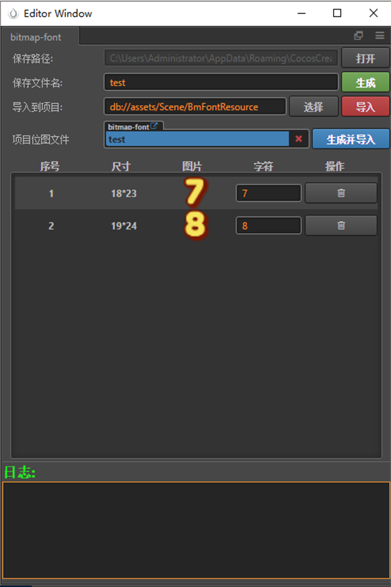

说明
游戏开发中经常会碰到制作BMFont字体的需求,市面上有很多专门的工具都在解决这个问题
- BMFont
- Glyph Designer2（Mac+Win32）
- bmGlyph（Mac 68元）
- ShoeBox 的位图功能 作者本身仅仅使用过BMFont,不得不吐槽下这个工具的交互,导入图片,指定ANSCII码,每次制作BMFont字体都特别麻烦
所以插件本身就是在简化指定ANSCII码的操作,并简单的和creator进行了工作流整合,插件功能比较薄弱,但是能简单满足制作bmfont的一些需求,后续功能追加还需要时间去打磨完善.

使用
打开菜单：扩展=》BitMap字体工具
在UI界面上可以看到几个需要填写的参数
- 存放路径:生成的fnt,png图片保存的位置,为了方便起见,插件默认指定了一个位置
- 保存文件名: 生成的fnt,png的文件名
- 导入到项目: 这个参数必须指定在项目的assets目录下,'导入'操作就是将生成的png,fnt导入到指定的项目位置
- 项目位图文件: 更新项目位图文件时使用,和creator无缝对接使用
动态图教程
当生成单独的位图文件时

当和creator配合使用,更新项目位图文件时

彩蛋
- 插件对你导入的图片,按照字母或者数字顺序进行了简单的排序,这样方便你查看,符合人的阅读习惯,记住,排序的前提是你对图片名字进行了有规律的命名
- 输入bitmap的字符时,插件进行了字符校验,比如你输入了11322324,那么插件永远只会截取第一个字符1,之后的都会被忽略,至于为什么,你需要了解下什么是bitmap-font!
如何导入位图?
在插件中间区域就是导入的位图字体信息,导入一张图片,只需要拖拽图片到该区域即可
需要注意的是
- 目前插件只能识别png图片,如果指定重复路径的图片文件,那么插件将不会导入.
- 只能导入非项目图片，所以，请不要把单个位图导入到项目中，然后再拖入到插件，这样是识别不到的
导入位图之后
导入位图之后,可以在列表中看到该图片的详细信息,在字符一栏可以输入该图片对应的字符,在输入完毕字符后,插件会自动进行校验,如果是空字符或者输入了重复的字符,那么字符栏颜色会变红,方便识别问题
如何删除字符
- 如果不小心导入了其他图片,那么可以在操作列点击删除按钮,或者在该行任意位置右键=>删除 进行删除
- 删除全部: 右键=> 删除全部 会删除当前拖入的所有字符图片
为什么我生成的bmfont文件不能使用？
bmfont其实是一个标准，需要2个文件配合使用：.fnt、.png，这两个文件一并导入到项目中即可使用，需要注意的是2个文件必须在同一个目录下！ 请使用插件自己生成的2个文件，不要使用任何其他来源的文件，因为不确保其他来源的文件有效
其他
如果使用过程中遇到任何问题,请仔细观察输出的日志信息,如果还有疑问,欢迎联系QQ群224756137
后续开发计划
- ttf直接导入+备用ttf
- 描边+填充+阴影
- 纯色+渐变+纹理+(材质)
- Custom Image
- Char单独设置offset和xadvance